Compromised EC2 Instance
Tình huống 1
Vào một buổi sáng thứ 2, bạn Long đến văn phòng sớm, chuẩn bị một tách cà phê, ngồi vào chỗ và mở laptop, bắt đầu các công việc hằng ngày như gửi E-mail, viết kế hoạch. Đột nhiên, bạn Long bắt đầu nhận một chuỗi những E-mails với nội dung liên quan đến sự phát hiện mới nhất đối với các mối nguy hại, điều mà bạn Long chưa từng thấy trước đây, tuy nhiên bạn Long bắt đầu tìm hiểu và điều tra ngay lập tức. Điều đáng mừng là đồng nghiệp của bạn, Việt đã thiết lập những phản ứng tự động dành cho những Findings ấy thế nên chúng đã được giải quyết tức.
Vậy những phản ứng tự động Việt đã thiết lập là những phản ứng nào?
Nội dung E-mail đầu tiên mà bạn Long được nhận được với việc EC2 instance của bạn có thể đã bị xâm nhập như sau: 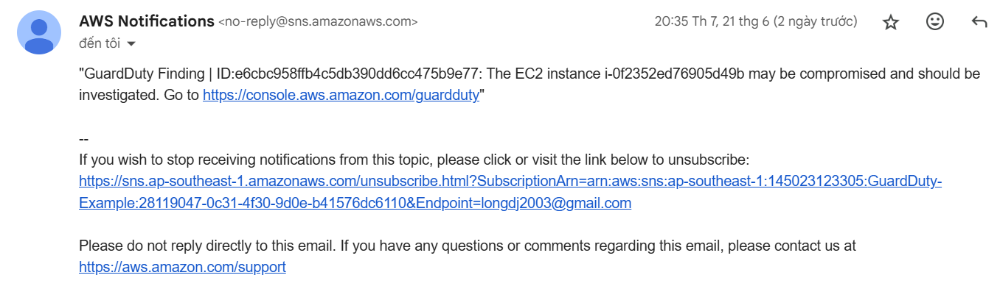 Nội dung E-mail thứ hai ngay sau đó mà bạn nhận được với tình hình đã được giải quyết tức thì như sau: 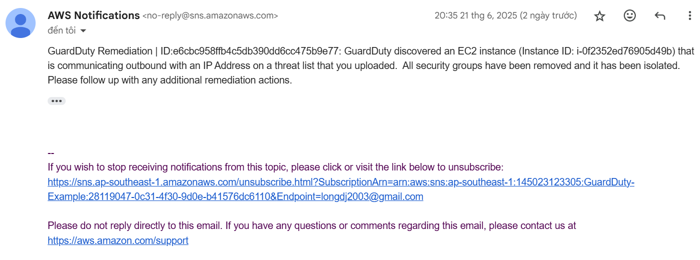
Kiến trúc tổng quan
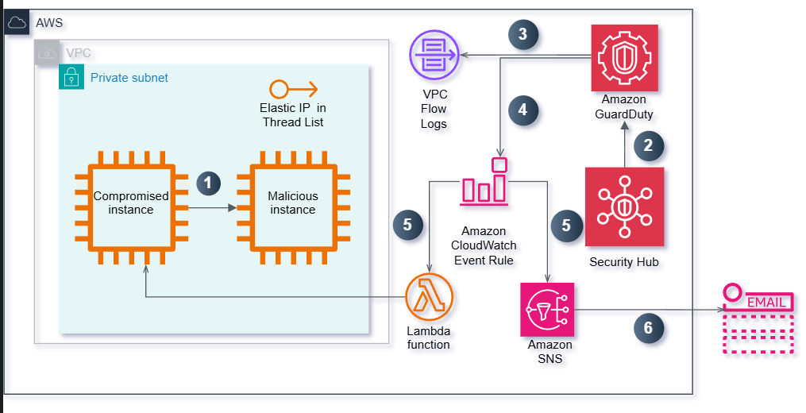
- Một EC2 compromised instance, tiến hành gửi gói tin pings đến địa chỉ EIP của một EC2 instance nguy hại. Địa chỉ EIP đó đã được thêm ở Custom Threat List.
- Security Hub phát hiện ra lỗ hổng bảo mật bất thường.
- GuardDuty tiến hành theo dõi VPC Flow Logs (kể cả CloudTrail và DNS Logs) và phân tích tình hình dựa trên Machine Learning, Custom Threat List và một số cở sở khác.
- GuardDuty sinh ra một Finding và hiển thị trên GuardDuty Console và gửi sự kiện này đến EventBridge Events.
- Dựa trên sự kiện này, EventBridge Event Rule tiến hành phản ứng và kích hoạt đồng thời SNS Topic và Lambda Function tương ứng.
- SNS Topic sẽ gửi E-mail cùng với chi tiết Finding cho bạn.
- Lambda Function sẽ tiến hành cô lập EC2 compromised instance.
Khi Việt thiết lập thông báo E-mail cho sự kiện này, anh ấy chỉ thêm một vài thông tin nhất định về Finding ấy và cấu hình Lambda Function để tự động cô lập EC2 compromised instance. Mặc dù Finding đã được giải quyết, bạn vẫn quyết định tìm hiểu chi tiết hơn về các thiết lập và cấu hình hiện tại này của Việt.
Quá trình điều tra
Mặc dù bạn có thể thấy các Findings này từ GuardDuty Console, đa số các khách hàng đều muốn tập hợp chúng, từ các AWS Regions và AWS Accounts, đến một hệ thống quản lý dữ liệu bảo mật tập trung (SIEM) để tiến hành phân tích và thực hiện quá trình Remediations. Cách tiếp cận thông dụng nhất là cấu hình GuardDuty dưới một mô hình Admin/Member và sử dụng quy trình kết hợp giữa EventBridge Event Rules và Lambda Function để tiến hành đẩy những Findings này tới SIEM hoặc một Centralized Logging Framework. Ngoài ra còn có một số giải pháp đến từ các đối tác của AWS, giúp khách hàng thực hiện các tác vụ hợp nhất và đẩy dữ liệu dễ dàng nhất.
-
Truy cập vào Security Hub ở ap-southeast-1
-
Chúng ta sẽ thấy được các cảnh báo bảo mật ở GuardDuty 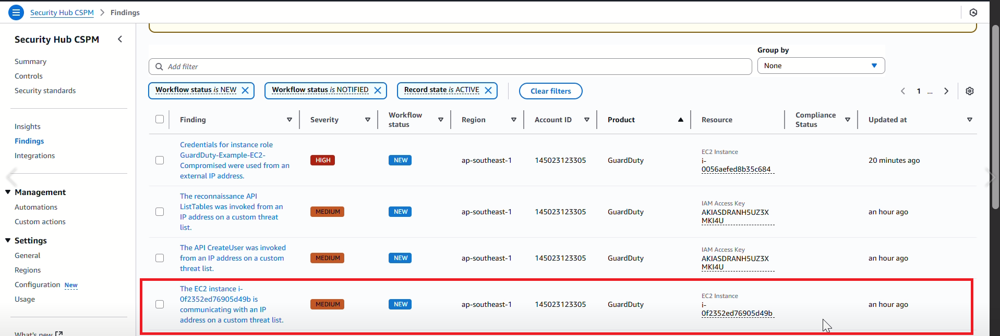
-
Tiến hành truy cập vào GuardDuty Console ở ap-southeast-1
-
Chúng ta sẽ thấy được một Finding với định dạng như sau UnauthorizedAccess:EC2/MaliciousIPCaller.Custom 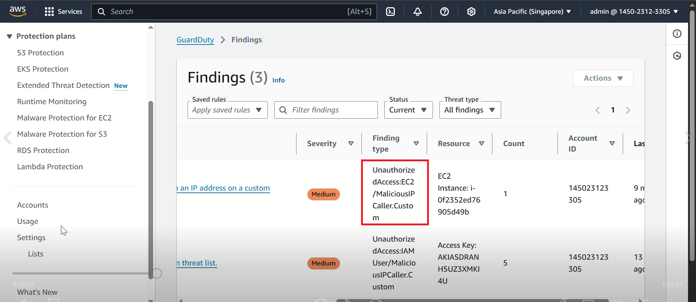
-
Nếu không có Finding nào, vui lòng ấn refresh và đợi.
Người dùng có thể truy xuất các Findings ở GuardDuty console trong vòng 90 ngày.
- Trong môi trường của bạn, kiểu Finding này chỉ ra rằng một EC2 instance đang thực hiện quá trình giao tiếp tới địa chỉ IP (đã được thêm vào Threat Lists).
- Tiến hành chọn Lists ở thanh điều hướng (bên tay trái) để có thể xem Threat List mà Việt đã thêm trước đây Example-Threat-List. 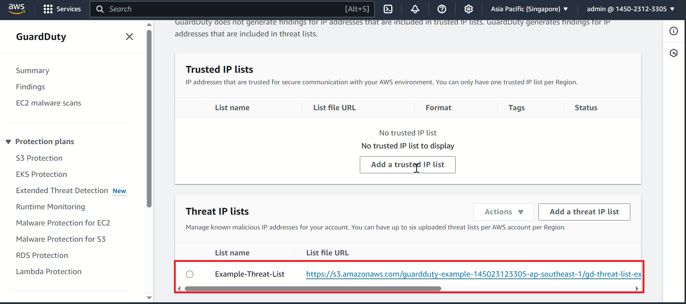
GuardDuty sử dụng những hệ thống Threat Intelligence được cung cấp bởi đội ngũ AWS Security và bên thứ 3 như ProofPoint và CrowdStike. Bạn có thể mở rộng tầm quan sát của GuardDuty bằng cách tự cấu hình danh sách IP đáng tin cậy (Trusted IP Lists) và danh sách các mối nguy hại (Threat Lists). Nếu bạn đã thiết lập GuardDuty theo cấu trúc Admin/Member, từ tài khoản GuardDuty Admin, bạn có thể quản lý các danh sách trên và để các tài khoản Members kế thừa. Mặc nhiên, các tài khoản Members sẽ không quyền chỉnh sửa các danh sách này.
Trong tình huống giả lập này, EC2 compromised instance chỉ tiến hành truy cập đến EIP của một EC2 instance khác trong cùng VPC nhằm nội bộ hoá quá trình giả lập cùng luồng xử lý dữ liệu chỉ xảy ra trong môi trường của bạn. CloudFormation Template sẽ tự động tạo danh sách mối nguy hại (Threat Lists) và gán địa chỉ EIP này vào đó.
Kiểm tra EventBridge Event Rule Việt sử dụng EventBridge Event Rules để gửi thông báo đến bạn về các Findings cùng với nội dung các bước của quá trình Remediations. Chúng ta sẽ tiến hành khảo sát chi tiết hơn để hiểu rõ Việt đã thiết lập những gì và quá trình này diễn ra như thế nào?
-
Truy cập vào EventBridge Console ở ap-southeast-1 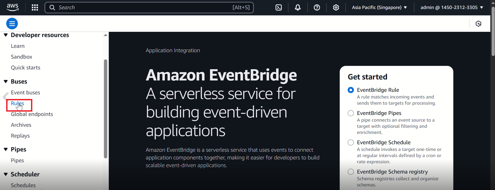
-
Ở thanh điều hướng bên tay trái, dưới Events, chọn Rules. Bạn sẽ thấy có 3 quy tắc đã được thiết lập (bởi CloudFormation Template), bắt đầu với tiền tố có dạng sau GuardDuty-Event.
-
Tiến hành chọn quy tắc có tên là GuardDuty-Event-EC2-MaliciousIPCaller. 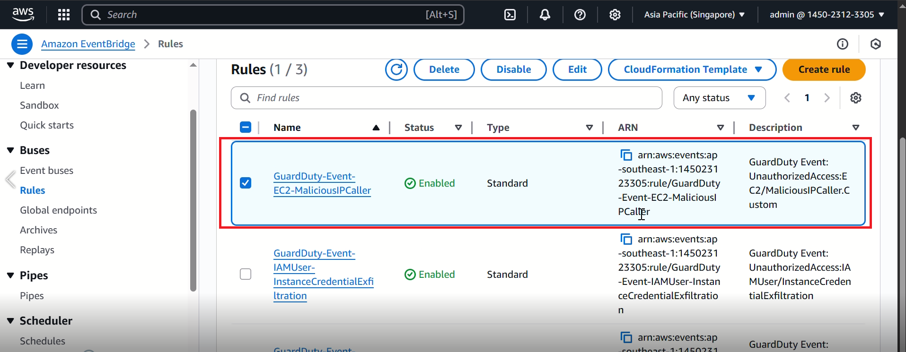
-
Bạn sẽ dễ dàng nhận thấy có 2 mục tiêu tại vùng Targets.
- Lambda Function
- SNS Topic: Tiến hành gửi thông báo E-mail cho bạn dựa trên dữ liệu được cung cấp bởi EventBridge Event Rule. Thay vì toàn bộ dữ liệu JSON được sử dụng, bằng việc sử dụng Input Transformer, Việt đã tuỳ chỉnh nội dung thông báo. 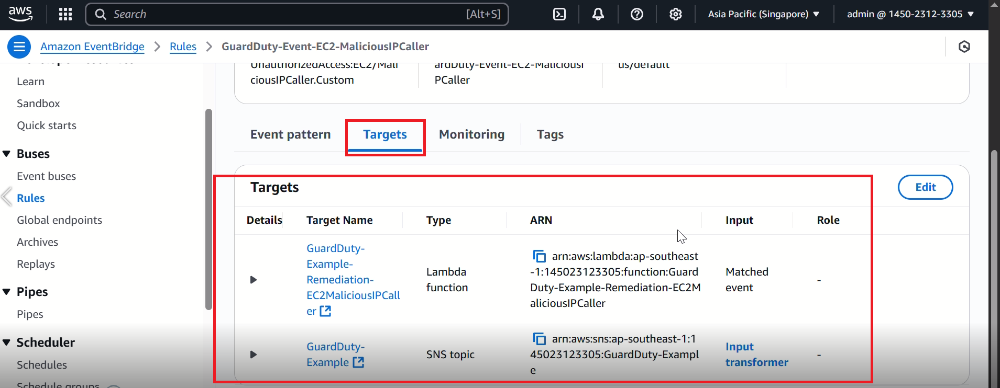
Kiểm tra quá trình Remediation dựa trên Lambda Function
Lambda Function là chìa khoá nắm giữ logic nhằm thực hiện các bước của quá trình Remediations dành cho các Findings. Việt đã thiết lập Lambda Function nhằm loại bỏ và thay thế Security Group của EC2 compromised instance bằng một Security Group không chứa bất kỳ một quy tắc Ingress/Egress nào. Điều này sẽ giúp cô lập EC2 compromised instance ra khỏi hệ thống mạng hiện tại.
Để tiến hành kiểm tra quá trình Remediation:
-
Từ quy tắc GuardDuty-Event-EC2-MaliciousIPCaller, tại vùng Targets, ở mục Type là Lambda Function, chúng ta tìm kiếm Resource Name tương ứng.
-
Tại Lambda Function console, tìm kiếm Resource Name theo bước trước.
-
Chúng ta có thể xem xét một số mục
- Configuration
- Tại thanh Designer, chúng ta sẽ dễ dàng thấy mối quan hệ với EventBridge Event Rule.
- Ở phần Function code, những logic về coding sẽ được thực thi tại đây.
- Permissions
- Monitoring 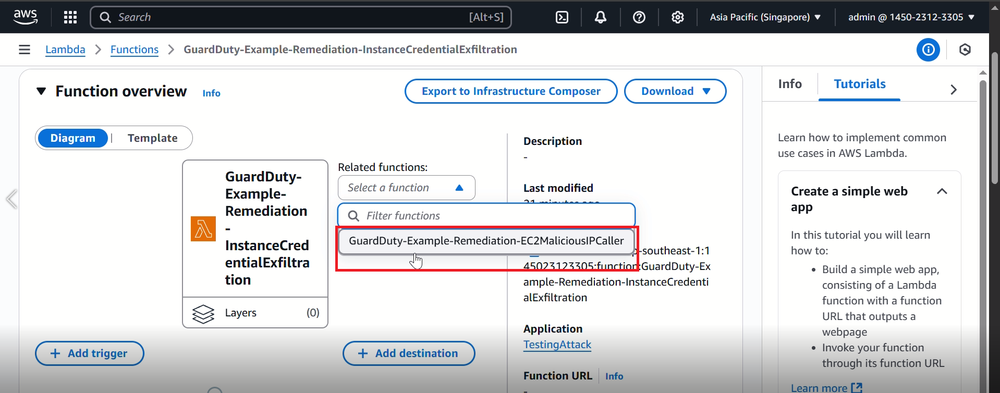 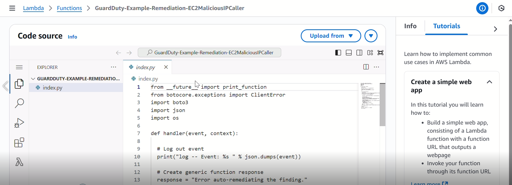
Xác nhận quá trình Remediation đã thành công Để đảm bảo kết quả của quá trình Remediation, chúng ta cần phải xem xét EC2 instance đã bị cô lập hay chưa. Tại thời điểm này, bạn đã nhận được một E-mail cùng với một số thông tin quan trọng.
-
Truy cập vào EC2 console ở ap-southeast-1 tại đây 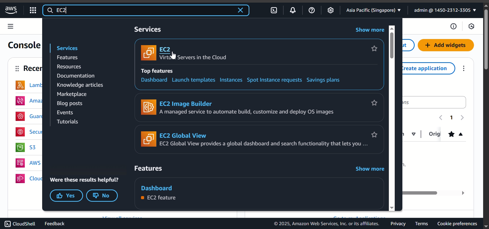
-
Chọn Instances, chúng sẽ thấy được 3 EC2 instance với tiền tố bắt đầu với định dạng sau GuardDuty-Example.
-
Dựa trên instance ID có từ GuardDuty Finding hay thông báo E-mail, chúng ta chọn EC2 instance tương ứng: GuardDuty-Example: Compromised Instance: Scenario 1.

-
Sau khi quá trình Remediation hoàn thành, chúng ta sẽ kiểm tra Security Group của EC2 compromised instance này, sẽ có định dạng tên tương tự sau ForensicSecurityGroup.
-
ForensicSecurityGroup sẽ không có bất kỳ một quy tắc Ingress/Egress nào chứa địa chỉ IP trong Example-Threat-List. 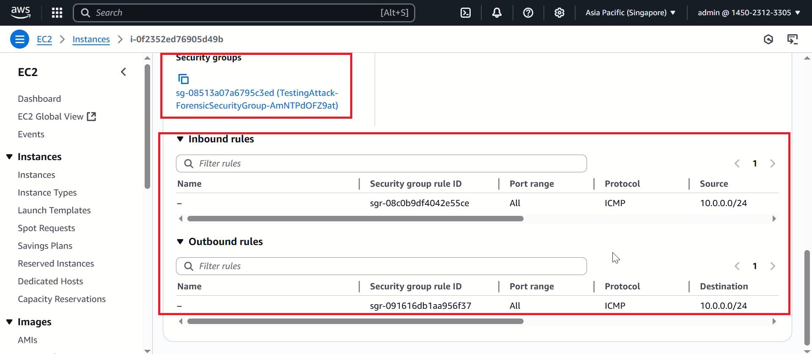